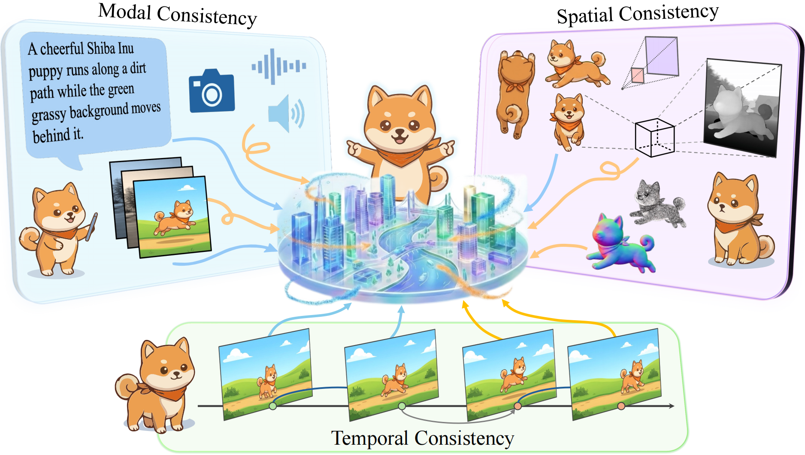
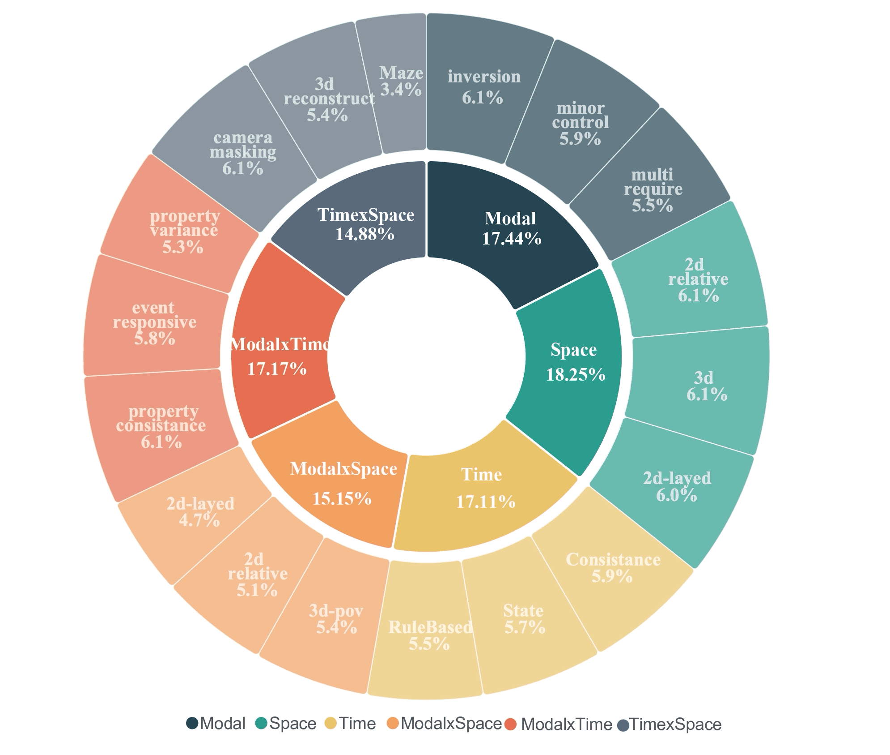
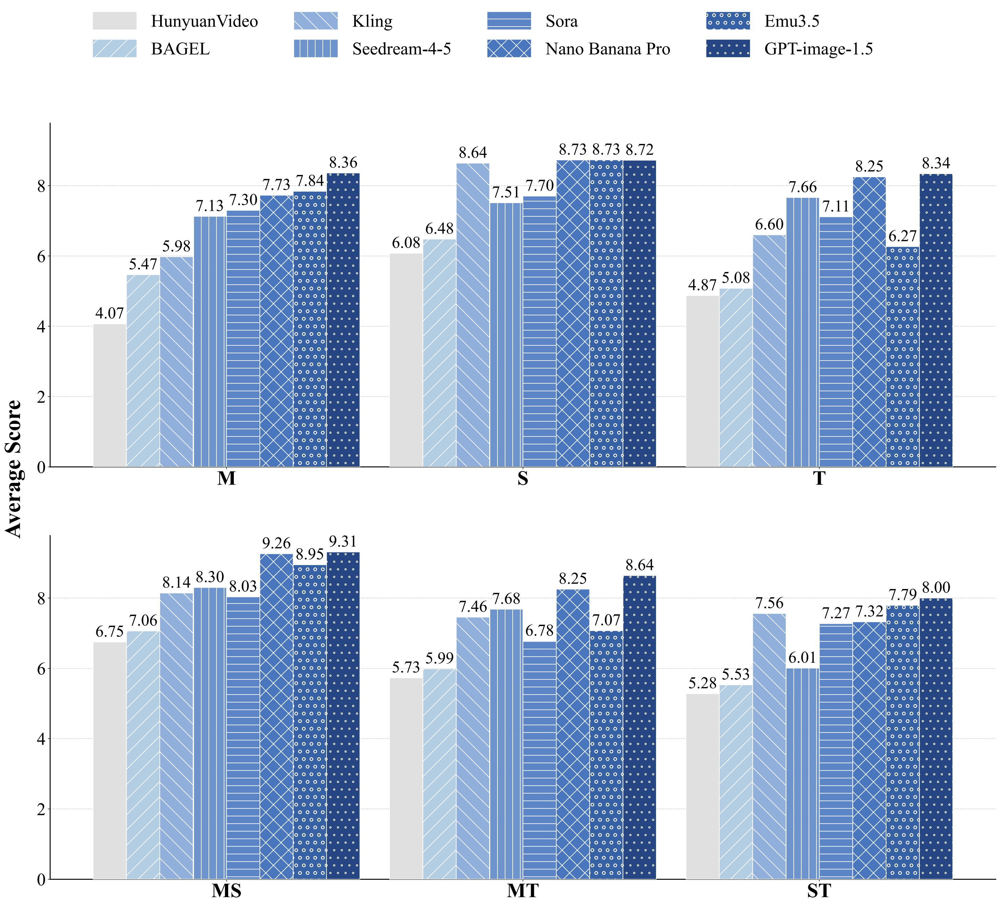

The Trinity of Consistency as a Defining Principle for General World Models

Why Do We Need a General World Model?
The construction of World Models capable of learning, simulating, and reasoning about objective physical laws constitutes a foundational challenge in the pursuit of Artificial General Intelligence. Existing models often behave as naive physicists; we propose that a robust World Model must be grounded in the Trinity of Consistency.
Modal Consistency
The Interface
The ability to align heterogeneous information (text, image, tactile) into a unified semantic space, serving as the cognitive interface for instruction and feedback.
Spatial Consistency
The Basis
The capacity to construct a 3D-aware representation that respects geometry, occlusion, and object permanence, ensuring the static plausibility of the simulated world.
Temporal Consistency
The Engine
The adherence to physical laws and causal logic over time, ensuring that dynamic evolution follows a predictable and logically sound trajectory.
Evolution of World Models
From loosely coupled specialized modules toward unified general architectures.
Modal Evolution
Transitioning from geometric isolation to native unified models.
Spatial Evolution
From implicit fields and primitives to generative priors.
Temporal Evolution
From autoregressive modeling to Diffusion Transformers.
CoW-Bench: The Ultimate Test
CoW-Bench (Consistency of World-models Benchmark) rigorously tests the model's ability to maintain the Trinity of Consistency under complex scenarios. It includes 1,485 meticulously constructed samples, organized into 18 fine-grained sub-tasks spanning Modal, Spatial, Temporal dimensions and their cross-axis synergies.

Empirical Results & Dynamic Leaderboard
Comprehensive evaluation across 18 sub-tasks reveals the current state of World Models.
Interactive Performance Analysis
Click legend to toggle models
Overall Performance Comparison

Detailed Error Analysis (Heatmaps)
"Heatmaps over sub-metrics reveal that while local geometry plausibility is strong, models struggle with explicit goal-conditioned state tracking (e.g., TS-Maze-2D) and semantic role binding."
CoW-Bench Leaderboard
AVG is rescaled from the original scale of [0, 10] to a percentage scale of [0, 100].
Core Diagnostic Conclusion
"Models achieve strong local motion plausibility yet fail when tasks require a persistent, goal-directed world state. The constraint backoff phenomenon is widespread—models silently replace strict constraints with common defaults to maintain visual plausibility."
Challenges & Future Outlook
From Generative Models to General World Simulators
Differentiability of Physical Authenticity
Embedding Hamiltonians and conservation laws into differentiable operators.
Brittleness of Long-term Causal Chains
Resisting the butterfly effect in hour-day scale generations.
Paradigm Shift to Controllability
Upgrading prompts to APIs for editable online simulations.
Ultimate Outlook
"A Prompt-as-Action paradigm in which UMMs with modality consistency and video generation models with spatial–temporal consistency are unified. Equipped with an internal semantic compiler, such models can interpret high-dimensional natural-language prompts and translate them into universal spatiotemporal simulations that adhere to the Trinity of Consistency."
Citation
@misc{wei2026trinityconsistencydefiningprinciple,
title={The Trinity of Consistency as a Defining Principle for General World Models},
author={Jingxuan Wei and Siyuan Li and Yuhang Xu and Zheng Sun and Junjie Jiang and Hexuan Jin and Caijun Jia and Honghao He and Xinglong Xu and Xi bai and Chang Yu and Yumou Liu and Junnan Zhu and Xuanhe Zhou and Jintao Chen and Xiaobin Hu and Shancheng Pang and Bihui Yu and Ran He and Zhen Lei and Stan Z. Li and Conghui He and Shuicheng Yan and Cheng Tan},
year={2026},
eprint={2602.23152},
archivePrefix={arXiv},
primaryClass={cs.AI},
url={https://arxiv.org/abs/2602.23152},
}Code and Dataset are released under Apache 2.0 License.